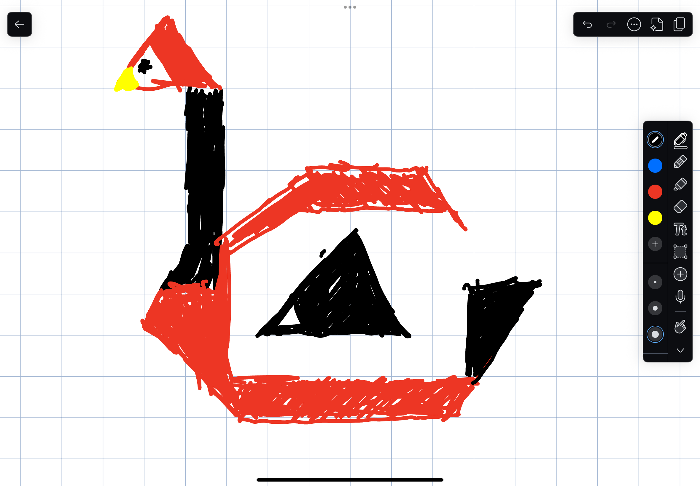

Paint with points, triangles, and circles. Use the button below to draw my personalized picture: a cardinal-style bird where J forms the neck/head and an open C wraps around the body.
Awesomeness: drag strokes are interpolated to fill gaps, and triangle brush strokes rotate with mouse direction.
Jesus Cuevas Gonzalez | jejcueva@ucsc.edu
Notes to Grader: My initials are integrated into the picture: the J forms the neck/head and the C forms the bird body. The awesomeness feature is the improved brush behavior with drag interpolation and direction-aware triangle strokes.
Ready to paint.
0 shapes | 0.00 ms
Drawing Mode:
Shape Color: 220 32 46
18 18
Personal sketch used for the WebGL picture. The body stays open on the right so the C initial reads clearly.
